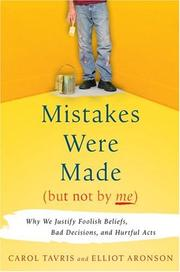

《错不在我》
书·Carol Tavris, Elliot Aronson, 2007·Mistakes Were Made (But Not by Me): Why We Justify Foolish Beliefs, Bad Decisions, and Hurtful Acts

用认知失调解释人为何难以承认错误。
- 作者
- Carol Tavris, Elliot Aronson
- 年份
- 2007
- 难度
- 入门
- 类型
- 概览
- 所属学派
- 认知失调
- 核心理论
- 认知失调理论
版本
- 中文版 《错不在我》 卡罗尔·塔夫里斯 / 艾略特·阿伦森 · 邢占军 译 · 中信出版社 · 2014 豆瓣 7.9 分（613 人评价） 豆瓣页面 ↗
- 英文版 Mistakes Were Made (But Not by Me): Why We Justify Foolish Beliefs, Bad Decisions, and Hurtful Acts Carol Tavris, Elliot Aronson · Third edition, Mariner Books · 2020 Open Library ↗